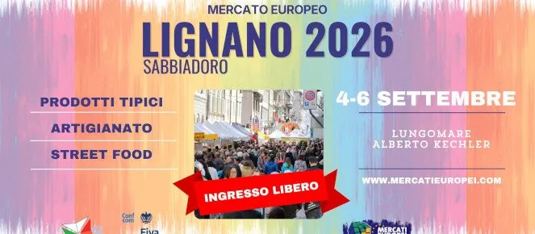

da ven 4 set a dom 6 set · dalle 11:00
2ª Fiera Europea
Tre giorni di street food europeo, artigianato, prodotti per la casa e bancarelle sul lungomare di Pineta.
 Indicazioni
Indicazioni
- Costi e prenotazioni
- Accesso libero · Nessuna prenotazione indicata
- Programma
- Dettagli da completare. Date e luogo confermati; orari analitici degli stand non pubblicati.
- In caso di maltempo
- Evento all’aperto; nessun piano alternativo pubblicato.
- Note
- Street food, artigianato e mercato sul lungomare.
L’EVENTO
Descrizione completa
La Fiera Europea porta sul Lungomare Alberto Kechler sapori di diversi Paesi, proposte di street food, artigianato e articoli per la casa. È un evento diffuso all’aperto, pensato per una passeggiata tra gli stand durante tutto il fine settimana.
La fonte turistica locale conferma le date dal 4 al 6 settembre e la sede a Lignano Pineta. L’orario completo delle singole attività non è pubblicato in forma dettagliata: l’apertura indicativa delle bancarelle parte dalla tarda mattinata e prosegue in serata.
Per chi arriva in auto conviene usare i parcheggi di Pineta e raggiungere il lungomare a piedi, perché la presenza degli stand può modificare temporaneamente la circolazione locale.
IL PROGRAMMA
Programma e orari
Appuntamenti raccolti dalle fonti elencate. Dove manca un orario, non è ancora disponibile in questa scheda.
Venerdì 4 settembre
- Apertura indicativa dalla tarda mattinata
- Stand gastronomici e commerciali fino a sera
Sabato 5 settembre
- Fiera e street food per tutta la giornata
Domenica 6 settembre
- Ultima giornata della fiera
- Chiusura in serata
INFORMAZIONI UTILI
Prima di partire
- Street food, artigianato e mercato sul lungomare.
- Possibili modifiche alla viabilità di Lignano Pineta.
- Contatti: Informazioni tramite Lignano.it
ORGANIZZAZIONE